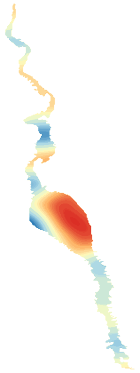

LakeScope › NV
Lake Mohave today
Updated 2026-11-21 - Atlas Labs
Some algae possible, 65°F water, level steady, 1 ft above normal, calm this morning.
Water level
639.62 ft
Bureau of Reclamation - 2026-11-19
7-day trend: steady (+0.14 ft). Compared with normal for this date: +1.4 ft (same weeks, 2016-2025).
Water clarity and algae
Some algae possible Last clear view: yesterday.
Surface temperature
65°F
seen from space on 2026-11-18

Weather, next 3 days
| Day | Sky | High / low | Wind | Rain |
|---|---|---|---|---|
| Saturday | Sunny | 63 / 49°F | 12 mph NNW | 0% |
| Sunday | Mostly Sunny | 64 / 51°F | 5 mph NNW | 0% |
| Monday | Sunny | 66 / 51°F | 5 mph W | 0% |
Sunrise 07:20 - sunset 17:28 - Waxing gibbous. National Weather Service.
Get the LakeScope app: alerts and the 3-D view of Lake Mohave